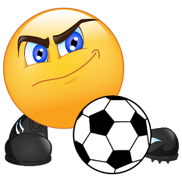

soccer
Soccer,
Hard Worker,
Biology & Goals
Soccer is one of the skills that I could like to become better at.
One reason is because soccer inspires me to lean something new, enjoy life, and not think too much about personal life issues.
Soccer is not an easy sprot but if you think about soccer is a fun game to play..
Fun
Ready
Life
